BY ANY MEDIA NECESSARY / PROCESS DOCUMENTATION 7 WEEKS
MISRI BHAGAT M.A. EXPERIENCE DESIGN — YEAR 2
Distraction
Hook
Don’t fight the distraction. HOOK IT.
01 / THE QUESTION
How it all started....
From the Luddite Movement to Distraction Hook
Luddite Movement
During the industrial revolution, machines entered textile production and threatened skilled workers' jobs and livelihoods. In response, the Luddites destroyed machines as a form of protest.
The Luddites responded to the technology changing their work. I respond to technology changing my attention.
DISTRACTION HOOK
Distraction Hook explores the moment when a notification pulls our attention away from work. Instead of blocking the distraction, it makes the moment visible and audible through light and sound.
Critical Making
Critical making connects thinking with making. It uses the process of making and experimenting to understand ideas, technology and their impact.
I understood the idea of distraction by making and testing it.
Protocol: Tactical Media
Tactical media explores how existing technologies and systems can be used in unexpected ways. Instead of rejecting technology, it looks at how we can work within a system to question it.
I started thinking about how the same technology that distracts me could become part of the experience.
02 / FROM TECHNOLOGY TO ATTENTION
The idea became smaller.
From changing systems to one tiny, familiar moment.
WORKING
Already Doing SomethingNOTIFICATION
Small SoundNOTICE
Attention ShiftsPHONE
Check It03 / TRY THE MOMENT
Trigger a distraction.
The physical artefact listens for a notification sound while the phone is on the stand. Here, the interaction is simplified for the web.
PHONE READY / WAITING
04 / MAKING THE THING
Making the thing
Turning the idea into a working object involved testing components, figuring out how they worked together, and making changes along the way.
Sometimes, we understand an idea better by watching it fail, change, and take shape.
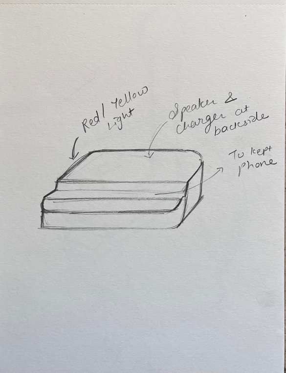
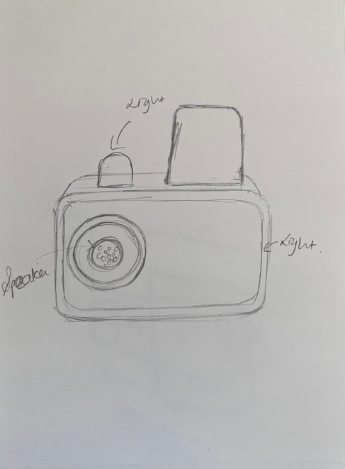
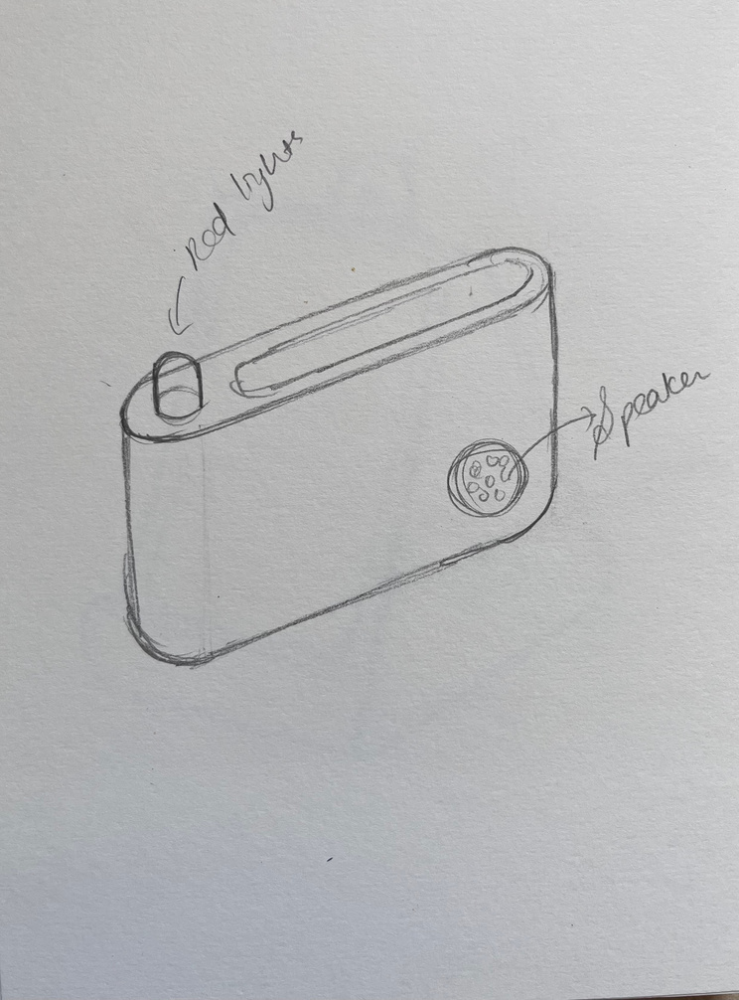
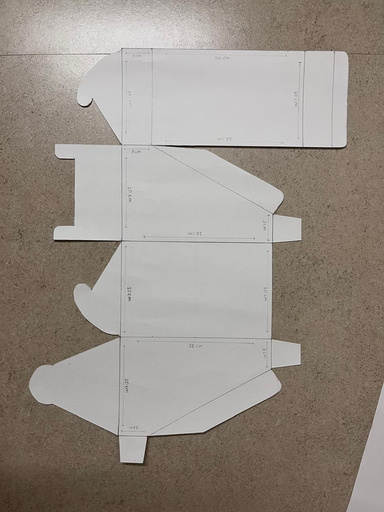
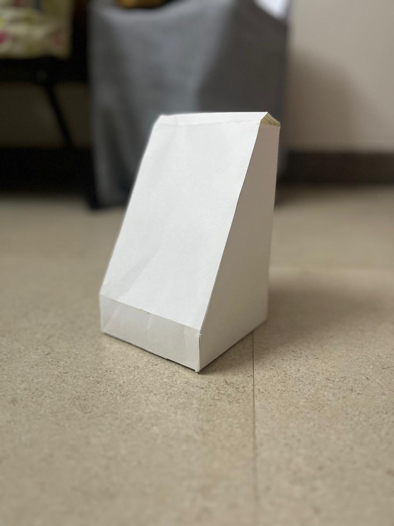
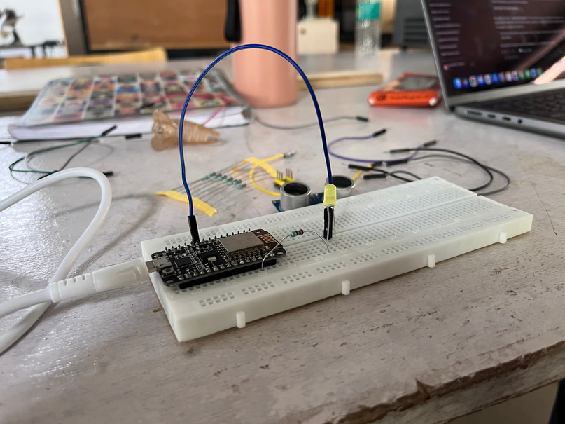
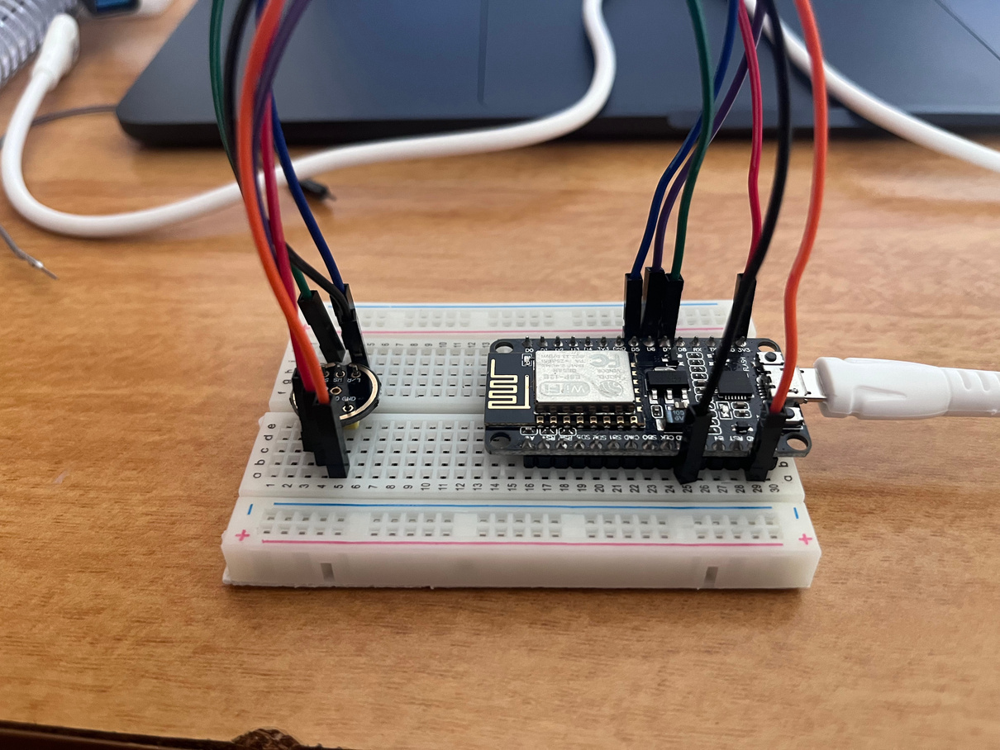
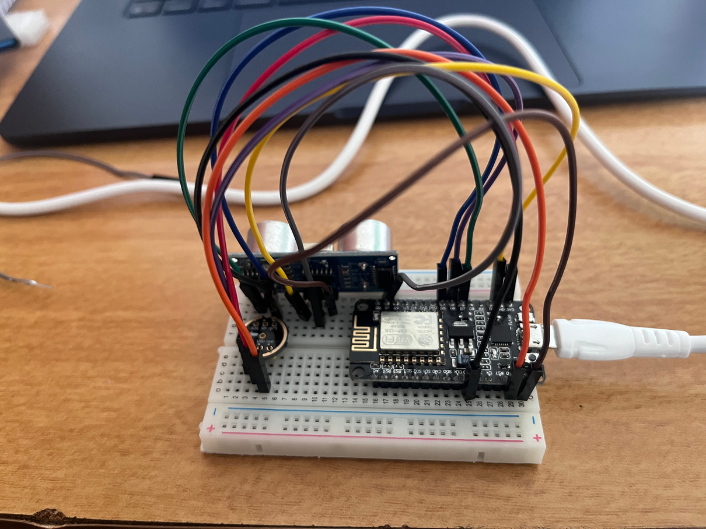
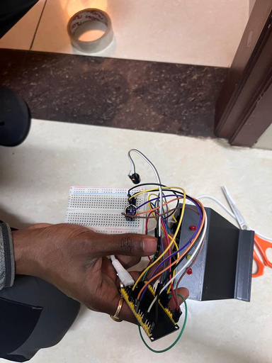
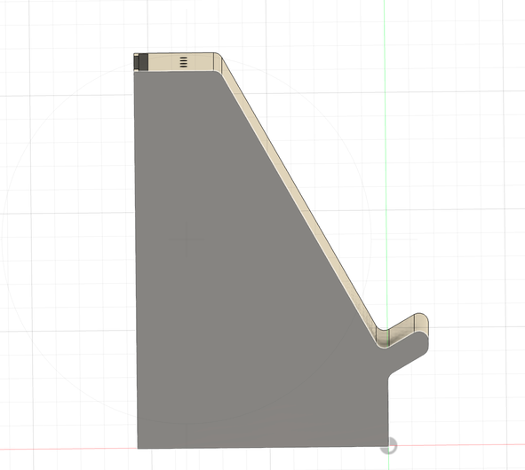
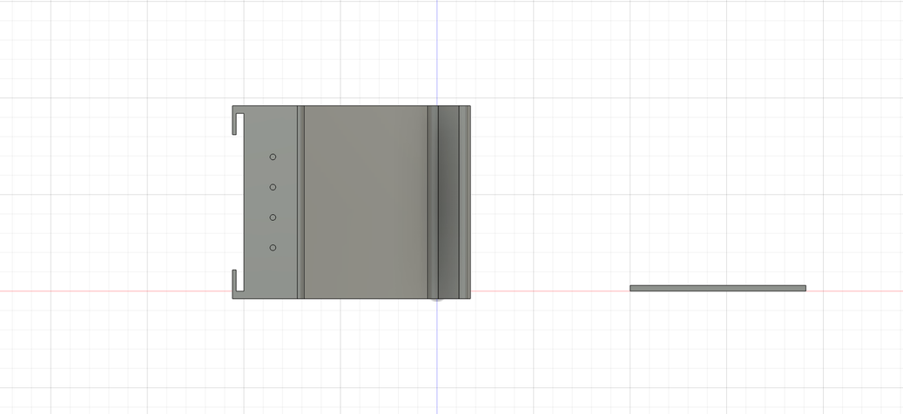
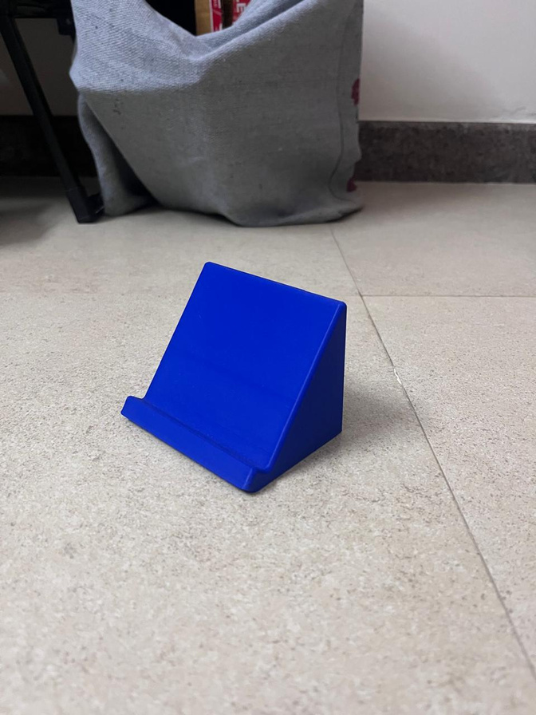
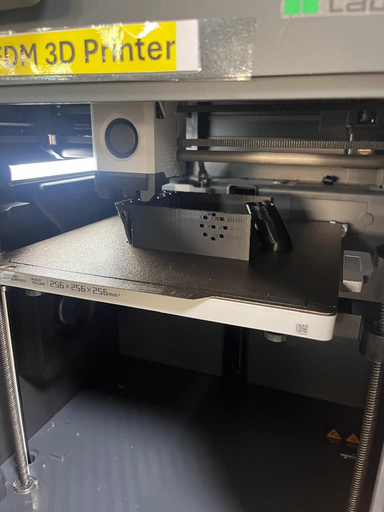
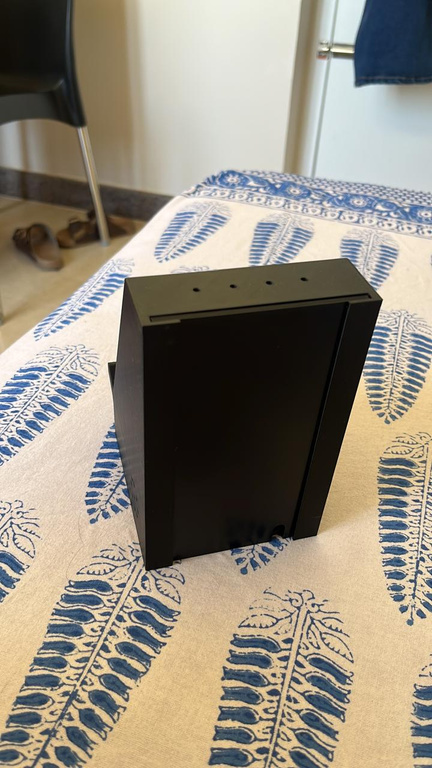
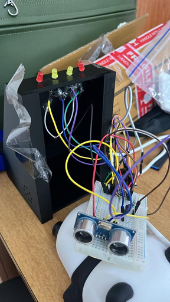
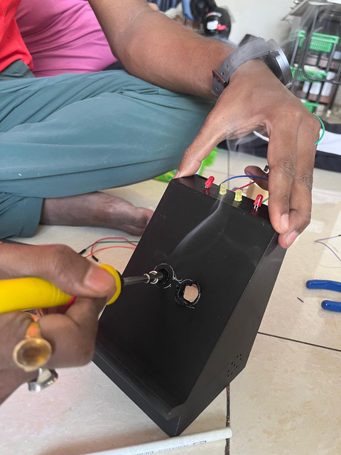
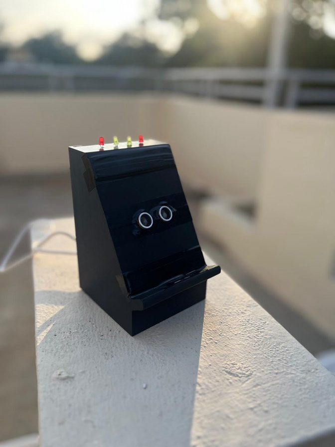
08 / THE EXPERIENCE IN ACTION
The Experience in Action
People use Distraction Hook while working or studying, making the moment when a notification pulls their attention away more noticeable.
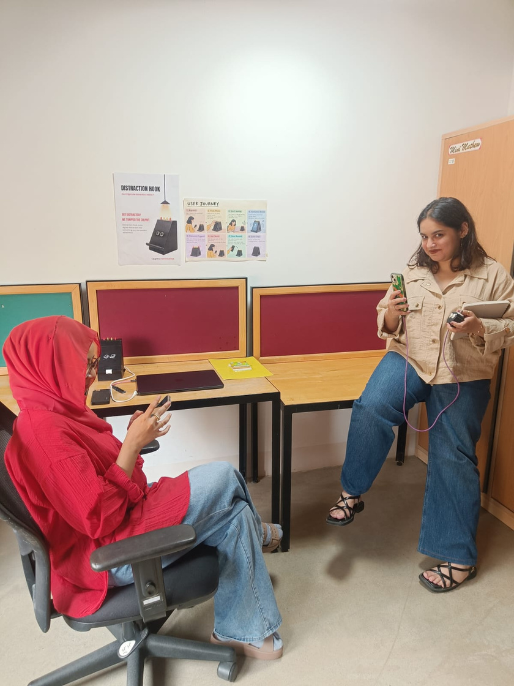
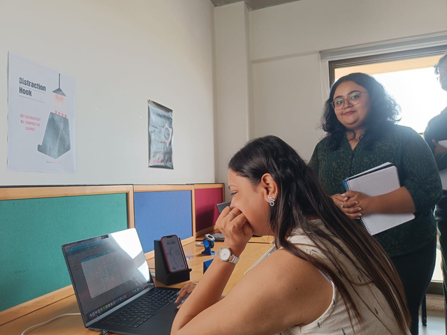
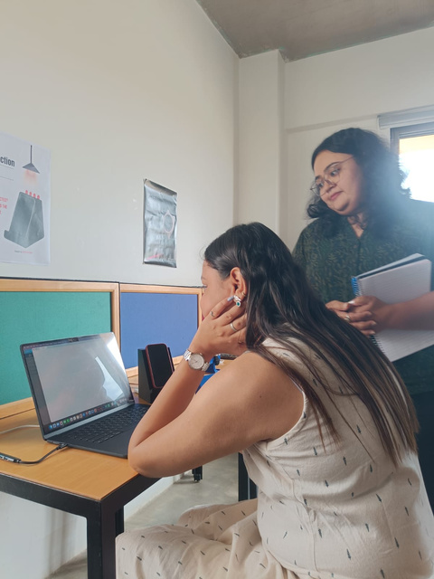
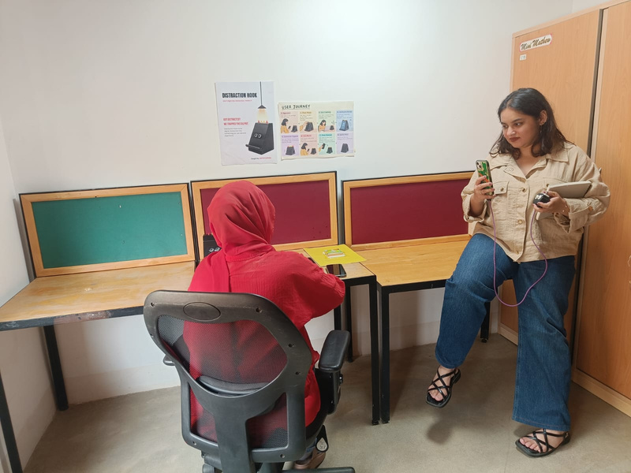
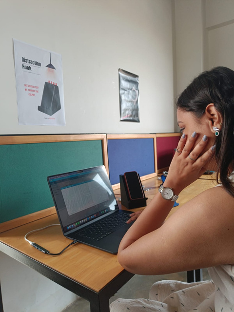
FINAL WORKING ARTEFACT
Watch the experience.
The documentation includes a video of the final working artefact.
09 / REFLECTION
I learned it while making it.
Reflecting on seven weeks of prototyping, physical computing, and critical making.
“I do not have to know everything before I start.”
Beginning with Uncertainty
When I started this studio, I had never worked with electronics before. Wires, sensors and coding felt difficult and confusing.
Learning by Doing
I slowly learned to check what could be wrong and try again. I learned that I could learn electronics, coding and 3D printing while making the project, instead of knowing everything before I started.
Gained Confidence
The biggest thing I am taking from these seven weeks is the confidence that I can learn something that initially feels very new to me.